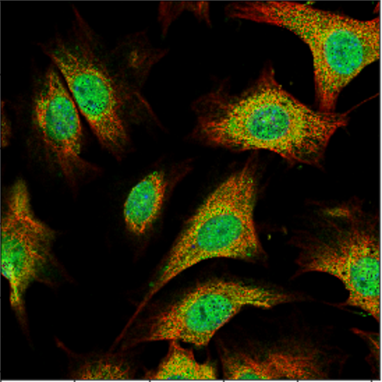
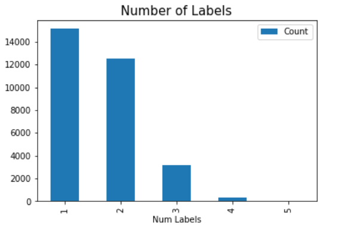

Project Motivation
In November 2018, the Human Protein Atlas started a competition hosted on Kaggle, a hub for data science and machine learning, with the goal of creating a protein locator algorithm. Such an algorithm would be extremely useful in biomedical research and imaging to help with the development of new medicine.
Goals
There are 28 different possible protein locations, and our goal is to create an algorithm that looks at an image and decides where the proteins are located in that image. We created a "random" labeller (informed by the distribution of training data) that performed with an accuracy of about 0.05.This random labeller acts as our baseline, which we hoped to perform better than.
Data
We were given a dataset of 31702 labelled training images. These images are chemically stained microscope images. Each of these images is split into 4 channels, where each 'color' is a different staining, as seen below.
When combined the images look like the following:

The dataset labels appeared in the training images with the following distribution:

The above information was used to design our random labeller. It's clear that there is a data imbalance, where several of our labels hardly appear at all.
Image Augmentation
To attempt to combat the lack of data, we applied of the computer vision techniques we've learned.- Scaling
- Translation
- Flipping
- Gaussian Blur
- Gaussian Noise This resulted in some improvement in the accuracy of our model, but it wasn't all that significant, unfortunately.
Strategy: Convolutional Neural Networks
We created two convolutional neural networks. The first ran on 128x128px images, with 5 layers - 4 convolutional layers and a fully connected layer at the end. We also applied batch normalization, ReLU activation, and a dropout of 0.1 after each layer.The second was similar, though it ran on 256x256px images and had 6 convolutional layers.
Evaluation
The first model took about 12 hours to train. It resulted in testing F1 score of 0.232.
The second model performed better with a tesing F1 score of 0.264, though it had some overfitting.

Improvement: Optimal Thresholding
While training the model, we used a constant threshold to make an F1 score, which resulted in suboptimal labelling. In order to improve upon our models, we came up with an algorithm to create an optimal threshold on the validation data.
This improved our validation accuracy significantly. However, on the testing data, it's unclear if it made a large impact.
The following is the confusion matrix of our results:
This gives us a Correct Classifcation Rate (CCR) of 78.18%. Clearly, how well we did here depends on the metric we use.
Discussion
First of all, this is a very difficult problem - 28 labels with highly imbalanced data would fool even the finest tuned deep learning models.
Second, we were quite limited by hardware - the first model took 12 hours to train, and the second 40. If we had some high end GPUs, we could play around with the models a bit more, but without that we had no such opportunity.
Finally, it's unclear that the F1 score was the best metric to use in this situation.
Conclusion and Future Work
There is definitely a lot of room for improvement with more data - some of the smallest classes had less than 50 images to train on.
Perhaps if we had first classified by cell type, we would better be informed to which proteins would be possible to be present.
Finally, with more time and better hardware, different deep learning models could be experimented on that would perhaps give better results.